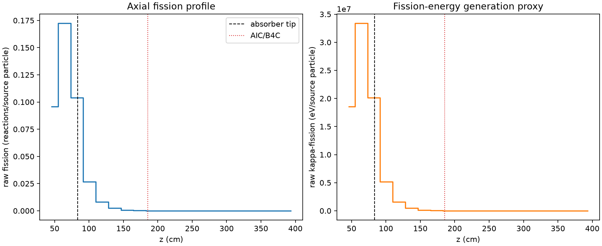
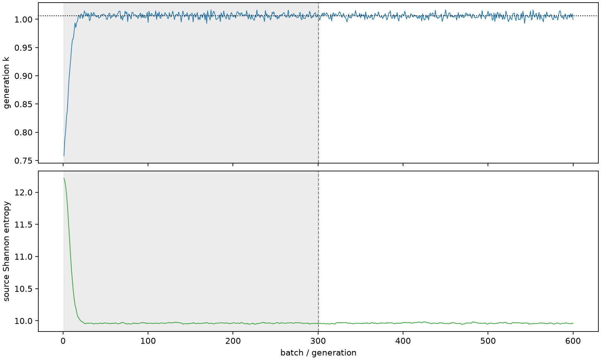

| field | value |
|---|---|
| experiment | V2-STAGE_256_OGRENCI_02-0009 |
| k | 1.0060935175756658 |
| MC standard error | 0.00018215833915898806 |
| seconds | 916.327199061001 |
| acceptance | not_assessed |
| convergence | review_required |
Completed is output integrity only; physical and statistical review required. Zero tallies do not prove zero production or zero uncertainty.
| diagnostic | value |
|---|---|
| geometric fuel voxels | 5280 |
| zero fission tally voxels | 1635 |
| low signal fuel voxels | 2992 |
| low signal fission share | 9.431632318214426e-05 |
| low signal kappa share | 9.4362652726326e-05 |
| important fission share | 0.950108837426192 |
| previous filter included | 2288 |
| duration estimate s | 1562.5173488400023 |
| actual minus estimate s | -646.1901497790013 |
| fission relative MC error | statistics |
|---|---|
| all_geometric_fuel | {"voxels": 5280, "positive_mean_voxels": 3645, "zero_mean_voxels": 1635, "undefined_relative_error_voxels": 1635, "median": 0.06006988748275007, "p95": 1.0, "maximum": 1.0000000000000002} |
| low_signal | {"voxels": 2992, "positive_mean_voxels": 1357, "zero_mean_voxels": 1635, "undefined_relative_error_voxels": 1635, "median": 0.7177394727771873, "p95": 1.0, "maximum": 1.0000000000000002} |
| important_95pct | {"voxels": 954, "positive_mean_voxels": 954, "zero_mean_voxels": 0, "undefined_relative_error_voxels": 0, "median": 0.004910570833968565, "p95": 0.009451276983998592, "maximum": 0.01082028074723525} |
| outside_previous_filter | {"voxels": 2992, "positive_mean_voxels": 1357, "zero_mean_voxels": 1635, "undefined_relative_error_voxels": 1635, "median": 0.7177394727771873, "p95": 1.0, "maximum": 1.0000000000000002} |
| kappa_fission relative MC error | statistics |
|---|---|
| all_geometric_fuel | {"voxels": 5280, "positive_mean_voxels": 3645, "zero_mean_voxels": 1635, "undefined_relative_error_voxels": 1635, "median": 0.0599830691956524, "p95": 1.0, "maximum": 1.0000000000000002} |
| low_signal | {"voxels": 2992, "positive_mean_voxels": 1357, "zero_mean_voxels": 1635, "undefined_relative_error_voxels": 1635, "median": 0.7171312343197547, "p95": 1.0, "maximum": 1.0000000000000002} |
| important_95pct | {"voxels": 954, "positive_mean_voxels": 954, "zero_mean_voxels": 0, "undefined_relative_error_voxels": 0, "median": 0.004903963915974726, "p95": 0.009436586070486764, "maximum": 0.010805789044280973} |
| outside_previous_filter | {"voxels": 2992, "positive_mean_voxels": 1357, "zero_mean_voxels": 1635, "undefined_relative_error_voxels": 1635, "median": 0.7171312343197547, "p95": 1.0, "maximum": 1.0000000000000002} |
| axial bin | fission share | kappa-fission share |
|---|---|---|
| 1 | 0.23330858795429787 | 0.2333039713332148 |
| 2 | 0.4201770565925652 | 0.4201462119798469 |
| 3 | 0.25360513529596795 | 0.25361141235326934 |
| 4 | 0.06487745697162692 | 0.06489771464542637 |
| 5 | 0.019503494132526174 | 0.019509690145604306 |
| 6 | 0.0059432660697052485 | 0.00594513674678778 |
| 7 | 0.0018301689381922197 | 0.0018307576776967504 |
| 8 | 0.0005645034390659887 | 0.0005646825204290388 |
| 9 | 0.00014107499143573574 | 0.00014113970218447672 |
| 10 | 3.6964010669140024e-05 | 3.698133449323039e-05 |
| 11 | 7.68221907690303e-06 | 7.689802241737763e-06 |
| 12 | 2.5750841370928463e-06 | 2.5765499531983333e-06 |
| 13 | 1.0456224722425972e-06 | 1.0459672340401337e-06 |
| 14 | 5.515442371932019e-07 | 5.520993209075876e-07 |
| 15 | 2.620629136372382e-07 | 2.621128516449613e-07 |
| 16 | 1.7444283867387137e-07 | 1.7440201700201396e-07 |
| 17 | 6.282717475715055e-10 | 6.274286104497874e-10 |
| 18 | 0.0 | 0.0 |
| 19 | 0.0 | 0.0 |
| 20 | 0.0 | 0.0 |
Histories include the inactive-to-active transition at batch 300. kappa-fission approximates fission energy production, not total heat deposition.

